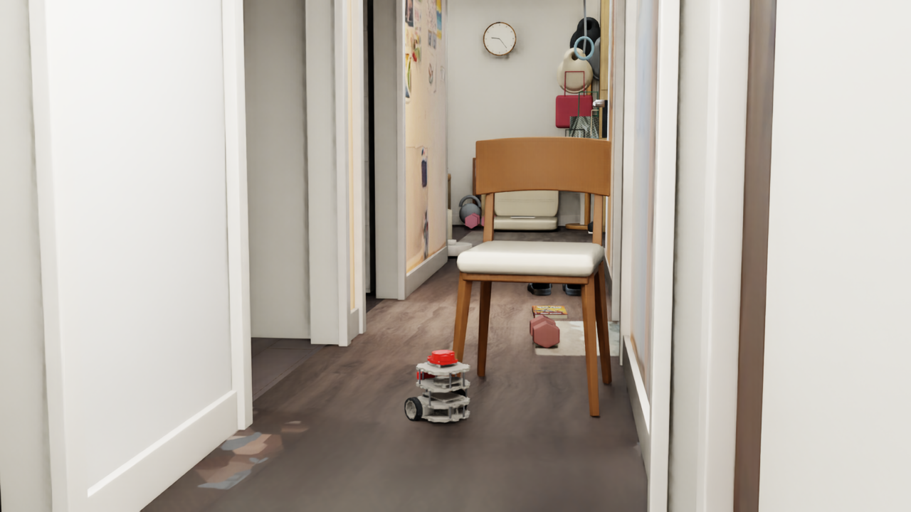

DEVLOG · 2026.09.26 · POLICY TRANSFER
Is PPO
actually driving?
This is the transition from handwritten LiDAR/depth/A* navigation to Gazebo-trained PPO in Isaac Sim. Arrival alone cannot establish the new policy's contribution, so record executed-action ownership and compare paths, time and contacts.
01 / WHAT CHANGED
From hand-written navigation rules to trained policy.
Handwritten code reads LiDAR and depth, fits the floor, builds an obstacle grid, then uses A* and wheel control. This navigation uses no trained network or PPO weights.
Load the Gazebo-trained PPO actor into Isaac Sim. LiDAR, goals and action history produce motion proposals. This round runs inference and tests without retraining.
In the previous corridor tests, I used failed trajectories to investigate the mat and clearance margin. After removing the raised mat and setting minimum center clearance to 14 cm, this Handwritten Isaac controller: depth camera + LiDAR + A* reached the goal in all eight open-passage layouts. This 8/8 belongs to the rule-based controller, not PPO. Previous observations and 10 sets of tests retained separately .
The clean-start PPO actor takes 78 values: 36 LiDAR sectors, 36 temporal changes, the previous executed action and 4 goal values. Adapt Isaac returns and execute proposed v/w through differential drive. Loading and motion work, but the training scene was more open; the actor lacks depth-detected low obstacles.
The original Gazebo safety layer overwrote all 23 short-test actions. Direct PPO moved for 5 seconds, but a 20-second run stopped at 32 cm before the first chair: 31 direct actions, then 64 stops. Directional safety produced 44 lateral-turn rejections in 20 seconds; allowing in-place turning for 30 seconds also failed. These expose safety/geometry mismatch, not proof that PPO cannot drive at all.
Another perception limitation: A static 2 cm book produced no LiDAR returns in its region, but depth detected 2,292 pixels more than 12 mm above the floor. Experimental fusion changed its directional range from 1.56 m to 0.75 m. This fusion is not used in the PPO driving tests below. View Perception Records
02 / THE GUARD
Reuse Isaac's validated clearance checks in the control chain.
I asked why fixed Gazebo safety distances should decide turns when Isaac already has a 2.5 cm depth/LiDAR map and 14 cm envelope. Keep PPO proposals, but check 0.8-second predicted clearance and agreement within 25° of local A*. Otherwise select the original route controller.

The upper branch ends with PPO's proposed v, w ; the lower A* branch also generates a fallback v, w. Both branches enter the selector. Only its selected output is sent to the wheels.
Selection rules: Predict about 0.8 seconds along PPO's proposed action. Execute it only if the robot center stays at least 14 cm from mapped obstacles and PPO's steering direction differs from the local A* route by less than 25°. The selected command is v, w . If either check fails, execute the A* fallback already computed by Isaac. Reassess at the next sensor update; stop if no mapped route exists or depth data is stale.
Near a chair, PPO might suggest straight ahead while A* points toward a side gap. A direction difference above 25° selects Isaac for that step. Recheck after turning; PPO can regain control on the next update. Selection is not permanent.
What changed in the controller?
Previously, an A* route and handwritten steering rules directly computed linear velocity v and angular velocity w . Convert Isaac LiDAR returns into 360 directional ranges, then 36 sector minima and 36 temporal changes. Add the previous action and goal information for 78 inputs. The Gazebo-trained actor proposes v, w . Failed clearance or route-direction checks select the original A* controller action. Scene, robot, sensors, speed limits, wheel interface and contact monitoring stay the same.
Where does the depth camera contribute?
Depth is not fed directly into PPO. Fit the floor, keep points about 1.2–25 cm above it, and combine them with LiDAR in a 2.5 cm grid. Low books and shoes then influence A* and the 14 cm clearance check. Fallback control stops on stale depth. Depth therefore contributes to the lower branch: mapping, safety checks and fallback control , while PPO in the upper branch still reads the original LiDAR observations.
A future adapter could project depth obstacles into LiDAR azimuths, keep the nearer range, and compute 36 sectors and temporal changes while preserving the 78D interface. A static book test showed this fusion can change measured ranges, but it has not been enabled in the driving tests ; it also changes PPO's input distribution and needs separate validation. This article does not establish that depth is already fed into PPO.
Keep the original limits: linear speed ≤ 0.065 m/s and |angular speed| ≤ 0.55 rad/s. The first passage run arrived in 66.9 seconds. Of 334 decisions, 272 executed PPO actions and 62 used the Isaac route controller , with zero sampled contact force. Deliberately blocked case 9 stopped for lack of progress at 34.3 seconds, also without sampled contact.
272/334 = 81.4% proves PPO actions were executed, not that they added value. All 62 takeovers came from excessive disagreement with A* direction; the short-horizon clearance check alone rejected none. A same-scene comparison is still needed to measure benefit.
03 / A–B–C TEST
Same route. Three ways to control the robot.
Fixed random seeds 2026092601 , obstacle layout, start, goal and speed limit. A uses PPO plus contact-stop monitoring; B uses Isaac depth/LiDAR mapping and A*; C adds PPO proposals with Isaac checks and fallback. A has only LiDAR while B/C also use depth, so this compares actual system configurations, not algorithms under identical sensing.
| Control mode | Outcome | Stop Time | Measured path | Maximum sampled contact-force component | Executed control decisions |
|---|---|---|---|---|---|
| A · PPO-only | Contact near the first chair; test stopped | 10.1 s | 0.579 m | 0.928 N | 48 PPO actions |
| B · Isaac-only | Goal reached | 67.1 s | 3.877 m | 0 N | 335 Isaac actions |
| C · Hybrid | Goal reached | 66.9 s | 3.878 m | 0 N | 272 PPO actions + 62 Isaac actions |

Blue marks the start, the star the goal and the line endpoint the stop. Gray boxes show approximate asset centers and footprints, not exact collision meshes.

PPO-only stopped near the first chair. Location suggests chair-area contact, but the log contains aggregate contact force without per-collider attribution.
In hybrid control, PPO actions ran for about 54.2 seconds and corresponded to about 3.17 m of measured travel. These establish action attribution, not an additional benefit attributable to PPO . Its requested forward speed exceeded the shared 0.065 m/s limit at every step, so all were clipped. PPO's actual contribution was steering; when selected, its angular command differed from A* by about 0.24 rad/s on average.
04 / WHAT THIS MEANS
Controlling most of the route does not prove better driving.
PPO-only could not safely finish this corridor. Hybrid arrival demonstrates the importance of Isaac's map and route constraints. It was only 0.2 seconds faster than Isaac-only, with almost identical path length—not evidence of an efficiency gain. The supported conclusion is: PPO contributes to steering, but these tests have not demonstrated an advantage over the existing A* controller.
Three runs on one seed are not a comprehensive policy benchmark. Zero force samples are not a continuous safety proof, and book depth is not in the actor input. Repeat A/B/C across seeds and hard layouts, reporting attribution, contacts, time and distance. If PPO still adds no benefit, retain Isaac-only as the practical controller.